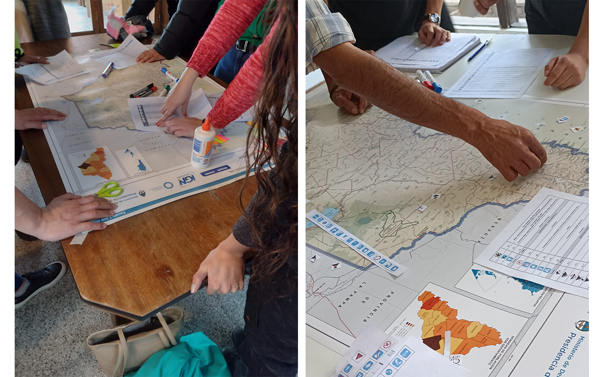
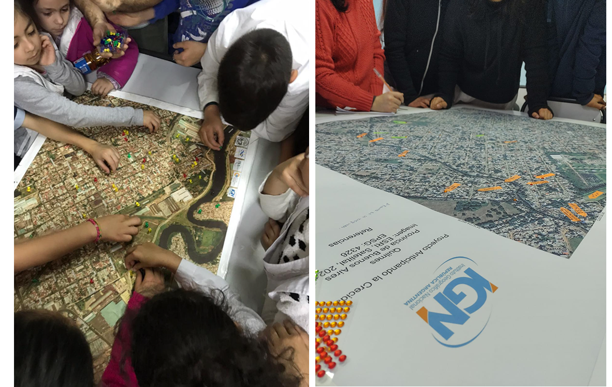

En el marco de la Cartografía Participativa (CP), consideramos que el mapeo es un proceso de construcción colectiva que sirve para crear, a través de la representación, mayor entendimiento de las relaciones entre una comunidad y su territorio, y así dimensionar problemáticas en él a partir de la combinación del conocimiento local con información y tecnología geográfica (dos Santos y Listo 2020; Chambers 2006; Gil Grandett y Gómez Ayola 2019). Esta metodología brinda prácticas de acción y reflexión sobre los usos que los actores sociales hacen del espacio, viéndose materializados los problemas y las experiencias de quienes habitan el lugar.
Partimos de la idea de que los mapas son representaciones que devienen de la ideología de quienes los construyen. Las personas participantes en un mapeo participativo crean y modifican los mapas, según sus propias formas de representación, mediante imágenes, íconos, dibujos y textos que permitan la comunicación y difusión de significados y sentidos. Así, se propone la creación de un espacio de interacción donde la participación se convierte en algo central para entender la mirada que tiene cada participante con respecto a su territorio (Iconoclastas, 2013).
Desde el IGN nos acercamos a la cartografía participativa con el objetivo de acompañar el proceso de producción y publicación de la información resultante de diversas experiencias de mapeos participativos, y en un futuro comenzar a pensar de qué manera estos productos podrían fortalecer, complementar y enriquecer la información geoespacial oficial.


Bibliografía
Chambers, R. (2006) El mapeo participativo y los sistemas de información geográfica: ¿De quién son los mapas? ¿Quién se empodera y quién se desempodera? ¿Quién gana y quién pierde?, Instituto de Estudios para el Desarrollo Universidad de Sussex Brighton BN1 9RE, Reino Unido.3.
dos Santos, A. F. R y Listo, F.L.R (2020) Mapeamento participativo de risco a escorregamentos no Municipio de Quipapá, zona da mata sul de pernambuco. En: Retratos de Geografía: Olhares através das Geotecnologías, Capítulo 12, año 2020, pp.129-139
Gil Grandett N. I. y Gómez Ayola, J.I.(2019) La cartografía participativa como herramienta para la acción política, dos estudios de caso en espacios rurales y urbanos en Colombia. Revista del Departamento de Geografía. FFyH – UNC. Año 7 (12), 290-31.
Iconoclasistas (2013) Manual de mapeo colectivo. Recursos cartográficos críticos para procesos territoriales de creación colaborativa. Buenos Aires: Tinta Limón.